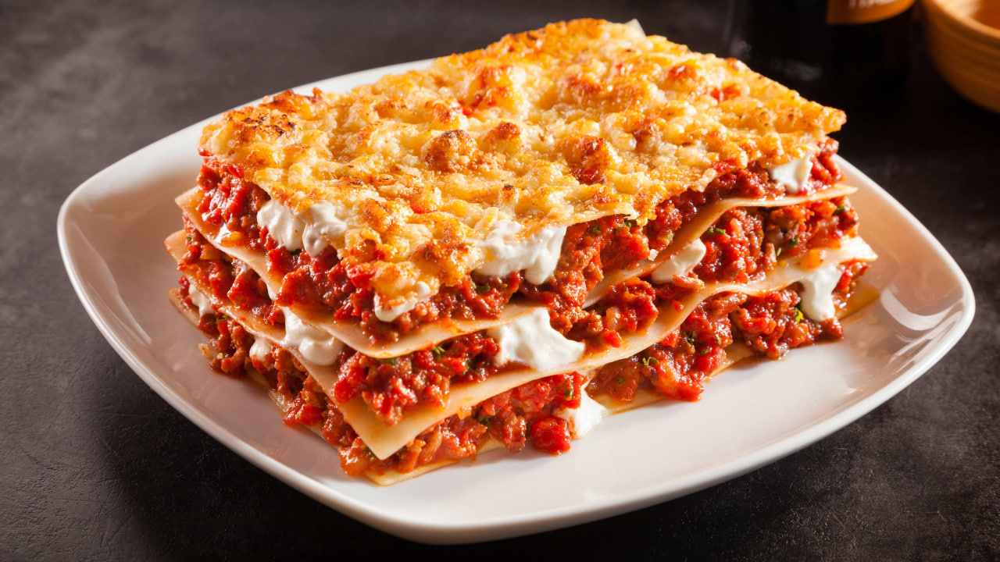

приготовление:
-
Соус БОЛОНЬЕЗЕ: Крупно нарезать 50 гр. бекона. Почистить и крупно нарезать 1 красную луковицу, 1 дольку чеснока и 1 морковь, нашинковать 4 стебля сельдерея. Измельчить все это в кухонном комбайне/блендере. Поставить сотейник на средний огонь и налить в него немного оливкового масла. Высыпать овощную смесь в сковороду, готовить 10 минут, помешивая. Добавить листья веточки розмарина в овощи. Когда овощи станут мягкими, добавить 400 гр. говяжьего фарша. Жарить в течение 10 минут, разбивая комочки мяса. Сюда же добавить 100 мл. красного вина и 600 гр. помидоров в собственном соку, приправить соус хорошей щепоткой соли и перца, иначе лазанья может получиться пресной. Повысить температуру плиты и довести до кипения, затем тушить на средней температуре в течение приблизительно 30 минут пока не получится нужная консистенция.
-
Разогреть духовку до 180 градусов.
-
Соус БЕШАМЕЛЬ: Вылить 700 мл. молока в маленькую кастрюлю, добавить 2 лавровых листа и маленькую щепотку соли и перца. Довести до кипения. Как только начнёт закипать - снять с плиты. В другой маленькой кастрюле растопить 30 гр. сливочного масла на средней температуре, добавить 1,5 ст.л. муки и смешать, чтобы получилась паста. Потом добавить горячее молоко по чуть-чуть, перемешивая каждый раз, прежде чем добавить следующую ложку. После удалить лавровые листы и варить соус Бешамель в течение 5 минут на самом маленьком огне. Натереть 50 гр. сыра пармезан в соус, добавить щепотку соли, перца и 0,75 ч.л. мускатного орех, хорошо перемешать.
-
СБОРКА: смазать оливковым маслом форму для выпечки, распределить треть соуса Болоньезе равномерно по дну. Сверху уложить листы для лазаньи (всего уйдет 150 гр.), они не должны накладываться друг на друга. Далее вылить треть соуса Бешамель. Затем уложить так ещё два слоя. Сверху порвать 125 гр. сыра моцарелла и натереть 25 гр. пармезана, посыпать щепоткой соли, перца и мускатного ореха. Накрыть фольгой и готовить в течение 30 минут. Затем уберать фольгу и готовьте ещё в течение 15 — 20 минут до золотистой корочки.